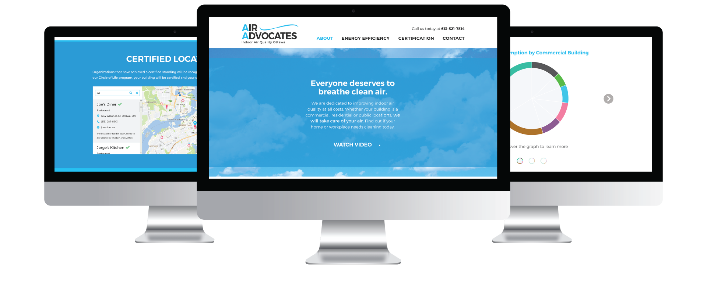

Air Advocates
Client
Air Advocates
Project
Website redesign for an indoor
air quality business
Role
UX/UI Designer
Overview
Air Advocates is an indoor air-quality cleaning business, based in Ottawa. I was hired to redesign their current website, which is outdated and has a horrible user experience. Their business goal was to inform viewers about their services and get them to contact their business. From analyzing the old site to creating wireframes and mockups, I created a fresh, user-friendly site to increase their conversion rate.

Site Analysis
From analyzing the old site, I took note of some immediate design flaws that needed to be fixed. (Refer to screenshots below)
A - The navigation bar puts the Home link at the far right side, which is counter-intuitive for the user, who is mentally used to finding the link at the beginning of the nav bar on the left side. By moving the Home link to the beginning of the nav bar, it avoids confusion for the user and lowers the chance of them getting lost looking for the link.
B - The site contains several levels of pages, resulting in the use of multi-level dropdown menus. Typically, if these are used, then it is good practice to organize them in a way that the pages are easy to find. Also, by including extra padding around the links, users are less likely to accidentally click on the wrong link.
C - The site is missing a footer, which plays a very important role in providing an extra contact point for the user. It is the last thing that a user sees after scrolling through a page, so a footer can help them make a decision, whether it is to contact the business, check out their social media, or sign up for their newsletter.
D - The text fields are fitted into a small div with a scrollbar. There is no reason to hide parts of the text, especially when there is so much whitespace on the page. The text should utilize the space efficiently, making it a more pleasant experience for the user to read the information.
E - The image of the pie chart is static and is not even clickable to a larger version. The size of the text is not accessible to all users and, therefore, is not as effective as it could be. Any representation of data presents an opportunity to include an interactive element to the site. Users would be able to understand the data better and become more engaged with the site.
F - The contact page should have a form that users can easily fill out without having to go through the process of sending an email from their own account. By breaking down barriers to contact, there is less resistance for the user to reach out to the business, which is the next step in converting a potential customer.
Wireframes
After the site analysis, we decided to restructure the site and condense many of the pages that were either incomplete or did not have enough information to keep its own page.
Mockups

Final Thoughts
After conducting user testing on 5 users, it was concluded that the new version of the site is much easier to navigate and users were less likely to get lost within the site. There is a much stronger sense of branding, which in turn creates a stronger sense of trust in the user. The call-to-actions and easily accessible contact information improve the likelihood of users contacting the business, which in turn could lead to potential customers. The redesigned website will be monitored after it is developed to ensure that it is improving Air Advocate's conversion rate.